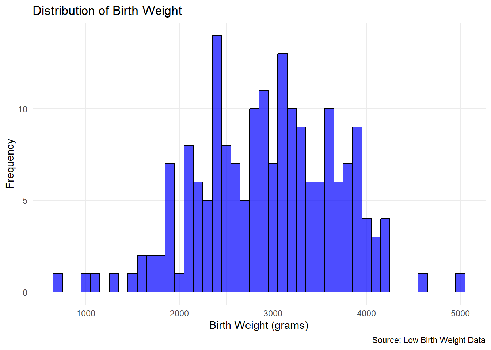
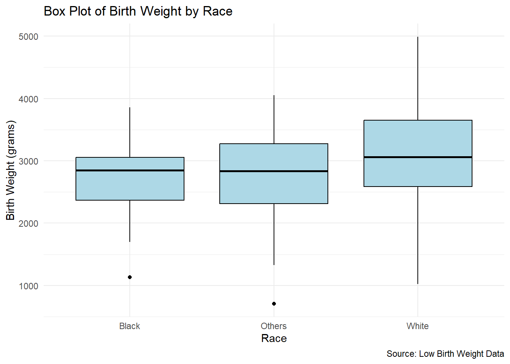
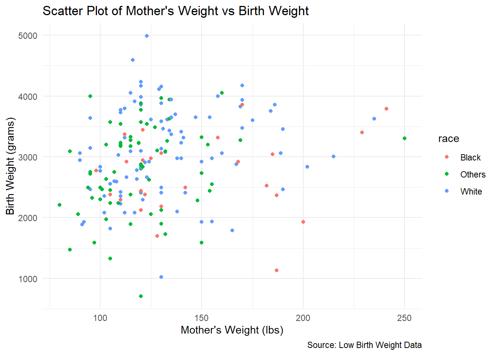
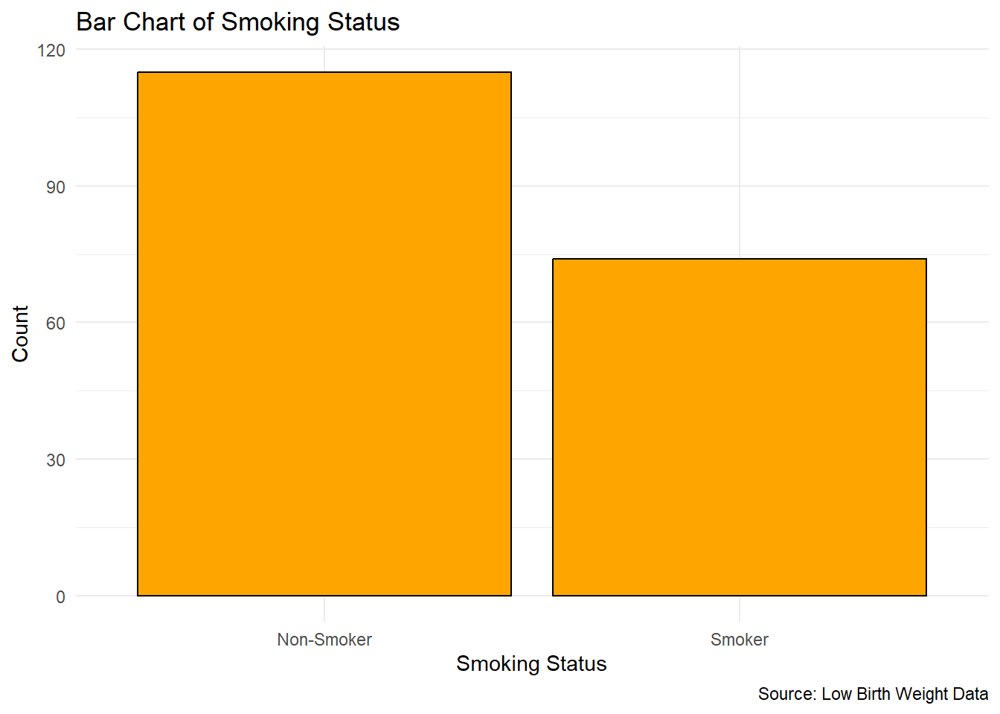
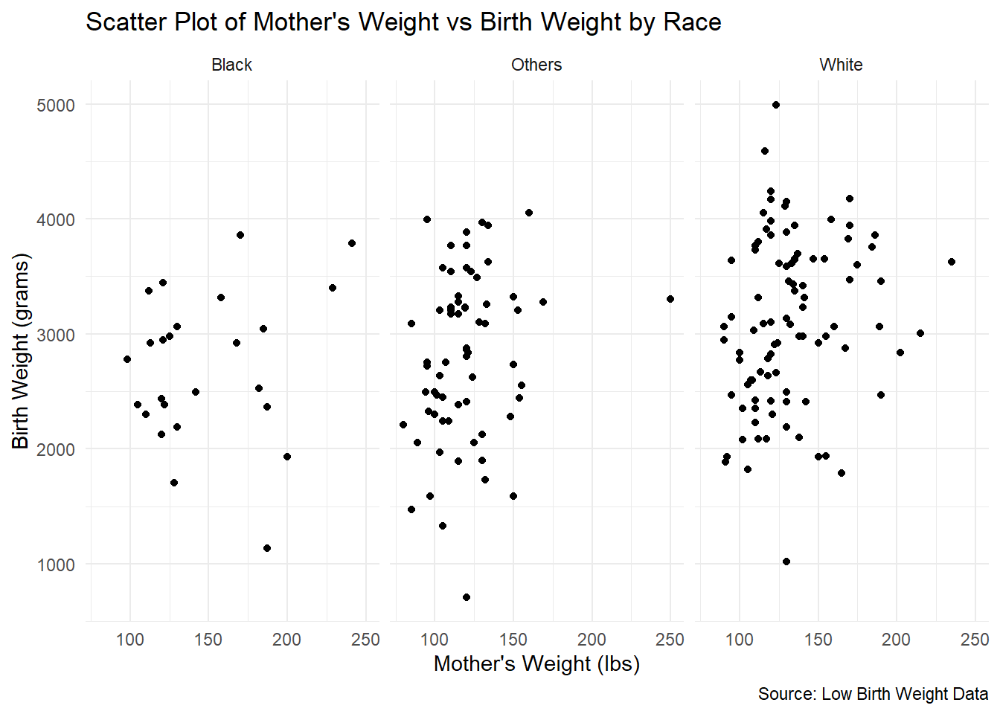

Exercise 3: Data Visualization
The goal of this exercise is to introduce participants to data visualization using R and the ggplot2 package. By working through these tasks, you will learn how to create a variety of plots such as histograms, box plots, scatter plots, and bar charts. These visualizations will help you understand the distribution of the data and explore relationships between variables. Additionally, you will practice adding meaningful titles, labels, and captions to your plots, as well as saving them for future use. This exercise aims to enhance your skills in presenting data effectively using R.
Question 1 and 6 are mandatory for all groups.
Question 7 is optional for all groups.
Question 2 - Group 1
Question 3 - Group 2
Question 4 - Group 3
Question 5 - Group 4
Questions
Question 1: Load the Data and Necessary Packages
Load the low birth weight dataset into R.
- Hint: Use functions like
read_csv()andhere()for loading the data. - Hint: Use functions like
pacman::p_load()for loading the packages.
- Hint: Use functions like
Question 2: Create a Histogram
Choose a suitable continuous variable and create a histogram using
ggplot.Add a title, labels for the x and y axes, and a caption.
Hint: Use
geom_histogram().

Question 3: Create a Box Plot
Select an appropriate variable and create a box plot using
ggplot.Add a title and a caption for the plot.
Hint: Use
geom_boxplot().try
raceas x axis.

Question 4: Create a Scatter Plot
Generate a scatter plot for the mother’s weight (
lwt) and the child’s birth weight (bwt), withraceused as a color grouping inggplot.Include a title, labels for the x and y axes, and a caption.
Hint: Use
geom_point().

Question 5: Create a Bar Chart
Identify a suitable categorical variable and create a bar chart using
ggplot.Add a title, labels for the x and y axes, and a caption.
Hint: Use
geom_bar()for bar charts.

Question 6: Save the Plot
Create a folder named
plotsin your R Project directory.Save the created plots in the
plotsfolder using theggsave()function.- Hint: Use
ggsave(here::here("plots", "your_plot_name.png").
- Hint: Use
Question 7: Try facet_wrap()
